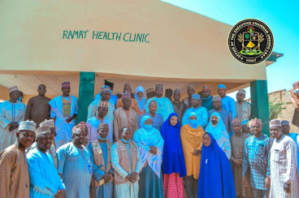
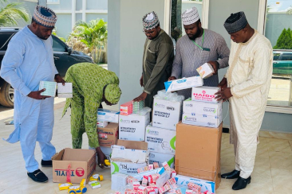
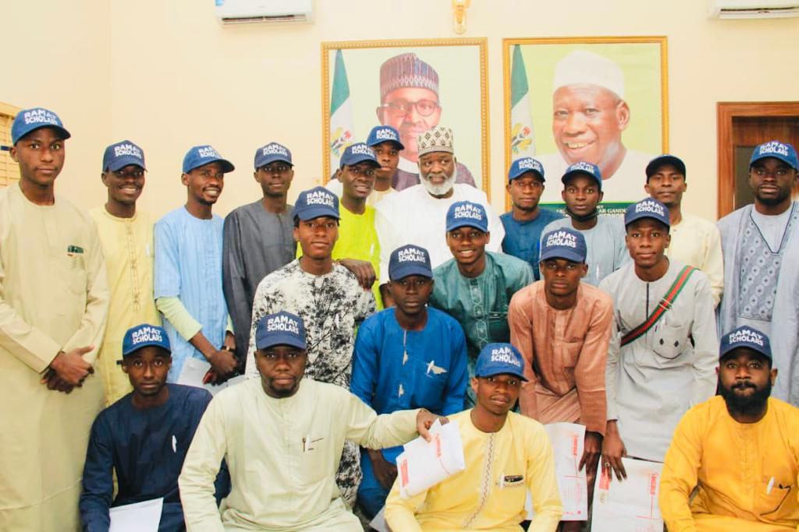
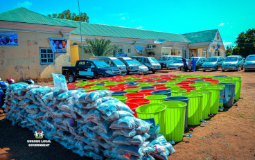
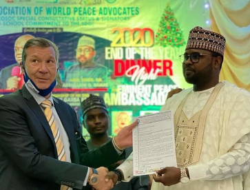
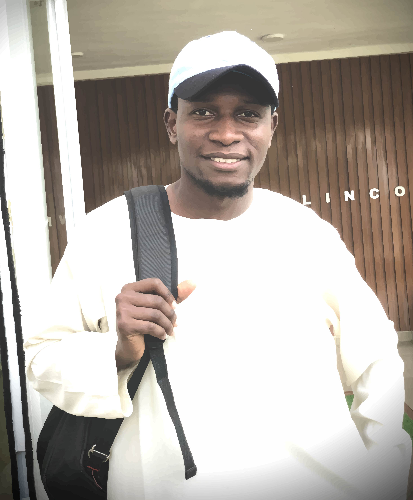

Ramat Scholars
Our IT Students


Contact us: 
Contact us:
 Ramat Foundation
Ramat Foundation



Construction, renovation and equipping of the healthcare infrastructure, Disbursement of medical consumables across the local government.

Distribution of learning materials to the schools of Ungogo local government.
Ramat foundation is a non-profitable organization founded on the year 2015 at Ungogo, Kano state, Nigeria. Ramat foundation Focuses on helping the less privileged communities in the areas of Ungogo Local Government, public healthcare, scholarship for students, offered jobs to the graduates, human capital developments, religious, environmental conservation, water mission-drilling bore holes to the poor communities, supporting the orphans, women empowerment, building schools, mosques and engages in charity activities.


Ramat Foundation has trained and equip hundreds of farmers to establish their poultry and fish farms around the Ungogo Local Government Arae.
Ramat Foundation construct, renovate and provided the equipment of the healthcare infrastructure.
Ramat Foundation sponsors 20 Students from Ungogo L.G.A to Lincoln University, Malaysia to study different part of IT programmes.

International Association of World peace advocates awarded Engr. Dr. Abdullahi Garba Ramat as a Peace Ambassador.

“When I heard that I had been selected
as one of the 20 beneficiaries of the Ramat Foundation Scholarship Scheme
to study computer software Engineering at Lincoln University Malaysia,
I was overjoyed, A wonderful initiative, I must confess, which is based purely on merit.
The scholarship from Ramat Foundation had a positive impact in my life.
I have nothing to say except thanking and praying to the founder of this foundation Engr. Dr. Abdullahi Garba Ramat for
empowering young people as well as developing the educational sector, ensuring that youths who are the future leaders are adequately
empowered with the required funds and assistance to enable them achieve their dreams and aspirations.
For students who wish to
enjoy this kind of privilege they must be ready to take their studies seriously and work very hard.”

We care ! || Service To Humanity
Copyright 2023 © | Powered by Ramat Scholar
 Call No: +234 906 480 9729
Call No: +234 906 480 9729